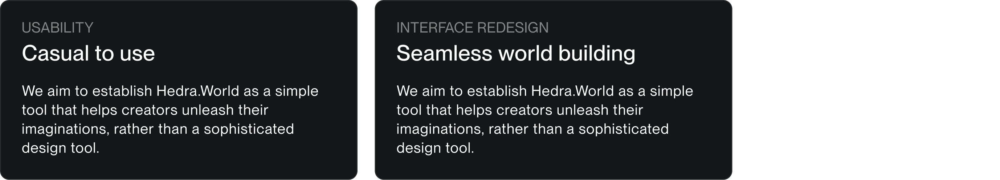

Hedra.World, currently in alpha, is a platform that leverages AI to generate creative content, including images, artworks, and videos. Its world-building from scratch and real-time AI rendering empowers users with full creative control.
Over three months, I collaborated closely with our alpha users, artists-in-residence, and engineers to redesign our core features and integrate new functionalities into the existing application from 0 to 1.
I led the redesign of Hedra.World's core features, enhancing user experience and integrating 3 new functionalities in 3 months. My designs successfully shipped for testing.
3 month
Lead product designer Payam,
Me, Hedra enginneering team
Application redesign & implementation
Hedra.World is an innovative 3D AI content creator that empowers creators with unparalleled control over video and image generation. Hedra incorporate features such as text to 3D generation, scene restyle with stable diffusion, a powerful assets library and the ability to animate object. All features designed to empower creators with full creative control.

World building from scratch by import existing assets from hedra’s library, or leverage text/image-to-3D generation to seamlessly populate the world

Design your 3D scene with composition and motions.

Render you scene real time with stable diffusion. Outcome could be video or
This demo video is credited to our Artist in Residence, Martin, and our lead product designer, Payam, for publishing it.
When I joined the Hedra team, they had a design agency’s proposal and a raw version of the app. As a designer skilled in 3D software and image generation AI, I worked with our alpha users and artist in residency to identify pain points in the current design.

Working with our users and stakeholders, I purposed a workspace UI redesign solution to:
1. Make our scene building feel more seamless with less friction
2. Improve the scalability of for future feature implementation
Previously, users faced friction by having to import assets through the library module. Additionally, our side panel was not scalable for features beyond the scene manager.
Previously, users faced friction by having to import assets through the library module.
Additionally, our side panel was not scalable for features beyond the scene manager.
After the redesign, we incorporated the assets library into the side panel, with the drag and drop action to make world building a seamless experience. The side panel is also expandable to incorporate new features.
Hedra.world's core features, Text to 3D and Scene Diffusion Restyle, focus on simplifying workflows and ensuring an intuitive user experience. My design goal is to reduce friction by minimizing clicks and mode switches, creating a familiar, drag-and-drop interface that feels natural to users, requiring little to no learning curve.
My design decisions are made by...
1. Collaborating with our artist-in-residence to identify areas for improvement in the previous version.
2. Becoming the user of similar applications, conducting market research to study competitors.
Creating assets from scratch is Hedra's most unique approach when it comes to world building. The user is creating a rough sketch in a 3D canvas, enabling motion, composition from any given angle.
I gave our Restyle feature prominence with a dedicated bottom bar, allowing users to access its functionality effortlessly at any design stage.
With split window mode, the user is able to adjust compostion (from the left panel) and see changes apply to the diffused scene real time (with the right panel)